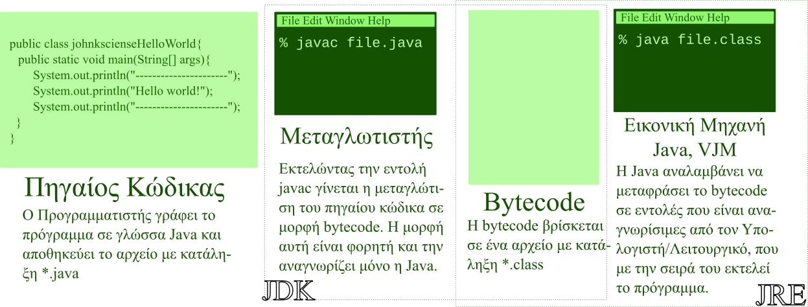

20 Οκτωβρίου 2023
Καλωσορίσατε στον μαγευτικό κόσμο του προγραμματισμού, της διαδικασίας, δηλαδή, συγγραφής προγραμμάτων που περιέχουν μία σειρά από εντολές που όταν εκτελεστούν από έναν υπολογιστή, επιτελούν μία συγκεκριμένη εργασία. Θα θέλατε να μάθετε να φτιάχνετε τα δικά σας προγράμματα; Να κάνετε μερικές επαναλαμβανόμενες και κοπιαστικές εργασίες αυτόματα και γρήγορα; Θα θέλατε να μπορείτε να μοιραστείτε τα προγράμματά σας με τους φίλους σας και τους συνεργάτες σας; Αυτό το άρθρο αποτελεί μία μικρή εισαγωγή για τον τρόπο με τον οποίο γράφουμε προγράμματα και πώς συνεργάζεται ο προγραμματιστής με τον υπολογιστή ώστε να διεκπεραιωθεί αυτή η εργασία.
H Java είναι μια πολύ διαδεδομένη, σύγχρονη, ενημερωνένη, γενικής χρήσης και αντικειμενοστρεφής γλώσσα προγραμματισμού που βρίσκει πολλές εφαρμογές στο διαδίκτυο, στους προσωπικούς υπολογιστές, στα κινητά, tablets, και άλλες μικροσυσκευές και ηλεκτρικές συσκευές όπως καφετιέρες, ψυγεία κτλ. Με λίγα λόγια θα την βρείτε σχεδόν παντού και φυσικά διανέμεται δωρεάν.
Η πρώτη έκδοση διατέθηκε στο κοινό το 1995 από την Sun Microsystems και ως σήμερα έχει ανανεωθεί πάρα πολλές φορές, ακολουθώντας την εξέλιξη της πληροφορικής και των υπολογιστών. Αποτελείται κυρίως από δύο μέρη, πρώτον το Java Runtime Environment (JRE) και δεύτερον το Java Development Kit (JDK). Αν απλά θέλετε να “τρέξετε” ένα πρόγραμμα γραμμένο σε Java, τότε χρειάζεστε μόνο το JRE, αν επιπλέον θέλετε να κατασκευάζετε και δικά σας προγράμματα τα οποία μπορείτε να διανέμετε στους φίλους σας, τότε χρειάζεστε και το JDK.
Για να μπορέσετε να γράψετε το πρώτο σας πρόγραμμα θα πρέπει να κατεβάσετε και να εγκαταστήσετε επιτυχώς από την https://www.java.com/en/ και τα δύο πακέτα της Java, δηλαδή το JRE και το JDK. To JRE πιθανόν να το έχετε ήδη εγκατεστημένο αλλά μπορείτε και να το ενημερώσετε. Επιπλέον θα χρειαστείτε και έναν απλό κειμενογράφο προσανατολισμένο προς την συγγραφή προγραμμάτων. Σας προτείνω τον Notepad++ που μπορείτε να κατεβάσετε από την διεύθυνση https://notepad-plus-plus.org/
Για να ελέγξετε ότι όλα έχουν εγκατασταθεί επιτυχώς, ανοίξτε μία κονσόλα/τερματικό, πληκτρολογήστε και εκτελέστε την εντολή:
java -version
Αν η εντολή εκτελεστεί και σας δώσει σαν αποτέλεσμα την έκδοση της java που έχετε, τότε όλα έχουν πάει καλά με την εγκατάσταση του JRE. Για να ελέγξετε αν έχει εγκατασταθεί το JDK πληκτρολογήστε και εκτελέστε:
javac -version
Ο λόγος που η Java είναι τόσο διαδεδομένη και το κύριο πλεονέκτημά της είναι το γεγονός ότι έχει κατασκευαστεί με τέτοιο τρόπο, ώστε να διευκολύνει την εργασία των προγραμματιστών. Δηλαδή με μία οποιαδήποτε άλλη γλώσσα προγραμματισμού ένα πρόγραμμα θα πρέπει να γραφεί και να διανεμηθεί με διαφορετικό τρόπο, ανάλογα σε ποιο λειτουργικό σύστημα (Windows, Linux, κ.α.) ενδέχεται να εκτελεστεί και αυτό απαιτεί από τον προγραμματιστή μεγάλη προσπάθεια γιατί πρέπει να κατασκευάσει το πρόγραμμα σε πολλές εκδόσεις, μία για κάθε λειτουργικό σύστημα. Στο περιβάλλον της Java ένας προγραμματιστής γράφει μία φορά και αυτό το πρόγραμμα τρέχει παντού! Ας δούμε αυτό τον μηχανισμό αναλυτικότερα.
Αρχικά θα πρέπει να κατανοήσετε ότι υπάρχουν τρία πρόσωπα-έννοιες που εμπλέκονται στην διαδικασία του προγραμματισμού: α) Ο Προγραμματιστής, β) η Μηχανή της Java και γ) ο Υπολογιστής-Λειτουργικό Σύστημα.
Ο προγραμματιστής είναι το πρόσωπο που γράφει μια σειρά από εντολές που αργότερα ο υπολογιστής/λειτουργικό θα τις εκτελέσει και θα πραγματοποιήσει μία συγκεκριμένη εργασία, π.χ. μια σειρά από μαθηματικές πράξεις για τον υπολογισμό του μέσου όρου των βαθμών ενός μαθητή. Το πρόβλημα είναι ότι ο προγραμματιστής και ο υπολογιστής “μιλάνε” διαφορετική γλώσσα και δεν καταλαβαίνει ο ένας τον άλλον. Την εργασία της μετάφρασης από την μία γλώσσα στην άλλη την αναλαμβάνει η Java.
Ας υποθέσουμε ότι είστε ένας Προγραμματιστής και θέλετε να πείτε στον υπολογιστή/λειτουργικό σας να τυπώσει στην οθόνη μία γραμμή με παύλες, άλλη μία με την φράση “Hello World!” και τέλος μία τρίτη γραμμή με παύλες όπως το παρακάτω σχήμα:
-----------------
Hello World!
-----------------
Ανοίγετε λοιπόν τον κειμενογράφο σας (notepad++) και πληκτρολογείτε το παρακάτω πρόγραμμα, δηλαδή μία σειρά από εντολές που προσπαθούν να εξηγήσουν στον υπολογιστή πως να τυπώσει αυτές τις τρεις γραμμές στην οθόνη. Το πρόγραμμα αυτό είναι γραμμένο σε μία γλώσσα που είναι κατανοητή από τους προγραμματιστές αλλά δεν την καταλαβαίνει ο υπολογιστής σας. Η γλώσσα αυτή ονομάζεται Java. Έχει δε την παρακάτω μορφή:
public class johnkscienseHelloWorld{
public static void main(String[] args){
System.out.println("---------------------");
System.out.println("Hello world!");
System.out.println("---------------------");
}
}
Πρέπει να προσέξετε να αντιγράψετε τις εντολές ακριβώς όπως εμφανίζονται παραπάνω δίνοντας σημασία στα κεφαλαία και τα πεζά γράμματα. Κατόπιν πρέπει να αποθηκεύσετε αυτό το αρχείο σε έναν κενό φάκελο εργασίας. Προσέξτε ότι το όνομα του αρχείου που θα δημιουργήσετε πρέπει να είναι υποχρεωτικά “johnkscienseHelloWorld”, ίδιο δηλαδή με το όνομα της κλάσης που εμφανίζεται στην πρώτη γραμμή και σαν κατάληξη πρέπει να έχει το δηλωτικό “java”.
Συγχαρητήρια! Μόλις κατασκευάσατε το πρώτο σας πρόγραμμα σε Java. Το αρχείο αυτό που φτιάξατε περιέχει τον πηγαίο κώδικα. Τώρα ο φάκελος εργασίας σας πρέπει να περιέχει ένα μοναδικό αρχείο: το “ johnkscienseHelloWorld.java”.
Ο πηγαίος κώδικας λοιπόν είναι ένα αρχείο που περιέχει μια σειρά από εντολές που είναι διαχειρίσιμες από τον προγραμματιστή και λέει στον υπολογιστή τι να κάνει. Στο πρόγραμμα που γράψαμε υπάρχουν τρεις βασικές εντολές στις γραμμές 3, 4 και 5 που λένε στον υπολογιστή να τυπώσει στην οθόνη μια γραμμή με παύλες, στην συνέχεια μία άλλη γραμμή με την φράση “Hello World!” και τέλος άλλη μια γραμμή με παύλες.
Το πρόβλημα εδώ είναι ότι οι εντολές αυτές στην μορφή που τις γράψαμε δεν είναι κατανοητές από τον υπολογιστή αλλά θα πρέπει να γίνει μια προσπάθεια ώστε να τις μετατρέψουμε σε τέτοια γλώσσα που να μπορεί να την καταλάβει ο υπολογιστής. Είμαι σίγουρος ότι θα σας γεννήθηκε η απορία γιατί να μην γράψουμε αυτές τις εντολές κατευθείαν στην γλώσσα που γνωρίζει ο υπολογιστής. Δυστυχώς αυτή η γλώσσα είναι πολύ περίπλοκη και είναι δύσκολα διαχειρίσιμη από έναν άνθρωπο, ενώ η γλώσσα (Java) που γράψαμε νωρίτερα είναι πολύ πιο εύκολη και με λίγη προσπάθεια θα μάθετε το λεξιλόγιο, την γραμματική και το συντακτικό της. Τα καλά νέα είναι ότι μπορούμε να μεταφράσουμε την γλώσσα που γράφει ο προγραμματιστής με αυτόματο τρόπο προς την γλώσσα που καταλαβαίνει ο υπολογιστής. Η γλώσσα αυτή ονομάζεται Γλώσσα Μηχανής.
Αλλά πριν προχωρήσουμε υπάρχει ένα τελευταίο πρόβλημα που πρέπει να επιλύσουμε και αυτό είναι ότι κάθε εταιρία κατασκευάζει τα δικά της μοντέλα υπολογιστών που μιλάνε και διαφορετική διάλεκτο της Γλώσσας Μηχανής και αυτή η κατάσταση χειροτερεύει αν σκεφτεί κανείς ότι η διάλεκτος της γλώσσας που καταλαβαίνει ένας υπολογιστής εξαρτάται και από το λειτουργικό σύστημα που είναι εγκαταστημένο σε αυτόν!
Την μετάφρασης της γλώσσας που γράφει ο προγραμματιστής προς την γλώσσα που καταλαβαίνει ο υπολογιστής και την εγγύηση ότι όλα θα πάνε καλά, ευτυχώς την αναλαμβάνει η Java και δεν θα σας απασχολήσει σχεδόν καθόλου. Σε μία άλλη γλώσσα προγραμματισμού θα πρέπει να μεταφράζετε εσείς με δικής σας ευθύνη το πρόγραμμά σας για κάθε τύπο υπολογιστή που θέλετε να “τρέξει” το πρόγραμμα που φτιάχνετε.
Η διαδικασία που ακολουθεί η Java για να κάνει την μετάφραση αποτελείται από δύο στάδια. Στο πρώτο από αυτά τα στάδια πρέπει να μεταγγλωτίσετε τον πηγαίο κώδικα, να μεταφράσετε δηλαδή το πρόγραμμα που γράψατε σε μία ενδιάμεση μορφή που σίγουρα δεν μπορεί να την καταλάβει ένας κοινός προγραμματιστής αλλά ούτε και ο υπολογιστής, αποτελεί όμως ένα προστάδιο της μετάφρασης που αποτελείται κυρίως από την εύρεση συντακτικών λαθών που μπορεί να έχετε κάνει κατά την διαδικασία συγγραφής του προγράμματος σας. Σε αυτό το στάδιο το πρόγραμμά σας μεταφράζεται σε πιο συμπαγή και φορητή μορφή και το μεγαλύτερο μέρος της μετάφρασης έχει τελειώσει. Δηλαδή τώρα μπορείτε να αποθηκεύσετε αυτό το πρόγραμμα στους καταλόγους σας αλλά και να το μοιραστείτε με τους φίλους σας.
Για να μεταγγλωτίσετε αυτό το πρόγραμμα που γράψατε και βρίσκεται μέσα στο αρχείο σας, ανοίγουμε τον κατάλογο εργασίας μας και μέσα σε αυτόν ανοίγουμε ένα τερματικό/κονσόλα. Σε αυτό το τερματικό πληκτρολογήστε την εντολή:
javac johnkscienseHelloWorld.java
Αν έχετε πληκτρολογήσει σωστά τις εντολές μέσα στον πηγαίο κώδικα, τότε δεν θα προκύψει κανένα λάθος και ο πηγαίος κώδικας θα μεταγγλωτιστεί (=μεταφραστεί) σε μία μορφή (=γλώσσα) που είναι κατανοητή μόνο από την μηχανή της Java αλλά από κανέναν άλλον. Η νέα αυτή μορφή που φτιάξατε ονομάζεται bytecode και είναι, όπως είπαμε, η γλώσσα που καταλαβαίνει μόνο η μηχανή της Java. Το αποτέλεσμα αυτής της μετάφρασης/μεταγγλώτισης αποθηκεύεται σε ένα νέο αρχείο που δημιουργείται αυτόματα με όνομα “johnkscienseHelloWorld.class”. Τώρα μέσα στον φάκελο εργασίας πρέπει να υπάρχουν δύο αρχεία, ένα με κατάληξη “java” που περιέχει τον πηγαίο κώδικα και ένα με κατάληξη “class” που περιέχει την bytecode. Την εργασία αυτή, της μεταγλώττισης δηλαδή του πηγαίου κώδικα σε γλώσσα bytecode την αναλαμβάνει το πακέτο JDK.
Τώρα ήρθε η ώρα να δούμε το δεύτερο και τελικό στάδιο της μετάφρασης και να βάλουμε τον υπολογιστή να εκτελέσει αυτές τις εντολές που γράψαμε. Για να του το εξηγήσουμε πρέπει να μιλάμε ακριβώς την γλώσσα του αλλά και την διάλεκτό του! Κάθε υπολογιστής με το λειτουργικό σύστημα που περιέχει μιλάει και μια διαφορετική γλώσσα. Ας υποθέσουμε ότι έχετε ένα laptop με τα windows, αυτός ο συνδυασμός μιλάει μια συγκεκριμένη γλώσσα/διάλεκτο, ενώ το ίδιο laptop με λειτουργικό το Linux-Ubuntu μιλάει μια διαφορετική διάλεκτο της ίδια γλώσσας. Δηλαδή ο συνδυασμός υλικού και λειτουργικού συστήματος αντιστοιχεί και σε μια διαφορετική διάλεκτο. Επομένως, όπως καταλαβαίνετε, θα πρέπει ξανά να μεταφράσουμε το αρχείο που περιέχει τώρα το bytecode στην διάλεκτο που καταλαβαίνει ο συγκεκριμένος υπολογιστής/λειτουργικό μας, ώστε να μπορέσει να εκτελέσει τις εντολές που του έχουμε πει να κάνει.
Αυτό θα το αναλάβει η Java και μάλιστα το τμήμα της που βρίσκεται στο πακέτο JRE και αυτόματα θα μεταφράσει μία-μία τις εντολές που βρίσκονται στο bytecode στην διάλεκτο του υπολογιστή σας και έτσι ο υπολογιστής/λειτουργικό θα τις εκτελέσει. Για να γίνει αυτό, αφού ανοίξετε τον φάκελο εργασίας και μέσα σε αυτόν ανοίξετε ένα τερματικό/κονσόλα, πληκτρολογήστε και εκτελέστε την εντολή:
java johnkscienseHelloWorld.class”
Στην οθόνη του υπολογιστή σας θα εμφανιστεί το μήνυμα:
-----------------
Hello World!
-----------------
Συνοπτικά, λοιπόν, ένας προγραμματιστής γράφει μια σειρά από εντολές σε μία γλώσσα που είναι κατανοητή από τους ανθρώπους με σκοπό αυτές οι εντολές όταν εκτελεστούν από έναν υπολογιστή να επιτελεστεί μία συγκεκριμένη εργασία. Οι υπολογιστές μαζί με το λειτουργικό σύστημα που έχουν, μιλάνε και μια διαφορετική διάλεκτο της δικής του γλώσσας. Επομένως πρέπει να γίνει μετάφραση των εντολών που έχει γράψει ο προγραμματιστής. Την εργασία αυτή την αναλαμβάνει η Java και την επιτελεί σε δύο στάδια. Αρχικά το JDK κάνει μία προεργασία της μετάφρασης και ακόμα ο κώδικας αποκτά την ιδιότητα της φορητότητας. Ο κώδικας αυτός ονομάζεται bytecode. Σε δεύτερο στάδιο το JRE μεταφράζει μία-μία τις εντολές που βρίσκονται στο bytecode προς την διάλεκτο που μιλάει ο συγκεκριμένος υπολογιστής που εκτελεί αυτή την στιγμή το πρόγραμμα και τις στέλνει στο λειτουργικό σύστημα που αυτό με την σειρά του θα τις μεταβιβάσει στον υπολογιστή προς διεκπεραίωση.

Σχήμα 1: Στην εικόνα βλέπετε μία σχηματική αναπαράσταση του τρόπου που δουλεύει η Java.
Μπορεί η διαδικασία να ακούγεται περίπλοκη, αλλά εσείς έχετε να κάνετε μόνο τα παρακάτω: 1. Να γράψετε το πρόγραμμα στην γλώσσα Java που είναι κατανοητή από έναν άνθρωπο με απλό και κοινό λεξιλόγιο και εύκολο συντακτικό και γραμματική. 2. Να εκτελέσετε την εντολή javac programName.java που είναι μέρος του πακέτου JDK, ώστε να κάνετε μία προεργασία της μετάφρασης, να βρείτε τα λάθη σας και να γίνει το πρόγραμμα φορητό σε άλλες δικές συσκευές αλλά και σε συσκευές φίλων σας 3. Να εκτελέσετε την εντολή java programName.class που είναι μέρος του πακέτου JRE ώστε να γίνει η τελική μετάφραση, προώθηση και εκτέλεση των εντολών από τον υπολογιστή.
Ένα ακόμα χαρακτηριστικό που κάνει την Java δημοφιλή από τους προγραμματιστές είναι το γεγονός ότι περιέχει βιβλιοθήκες που περιέχουν έτοιμα υποπρογράμματα που μπορείτε να τα χρησιμοποιήσετε χωρίς να χρειαστεί να τα ξαναγράψετε. Με αυτό τον τρόπο κερδίζετε πολύτιμο χρόνο και κόπο και σας δίνετ η εγγύηση ότι λειτουργούν σωστά, είναι γρήγορα και αποδοτικά.
Αυτά και πολλά άλλα χαρακτηριστικά της Java την κατατάσσουν στις πιο δημοφιλείς γλώσσες του κόσμου των υπολογιστών.